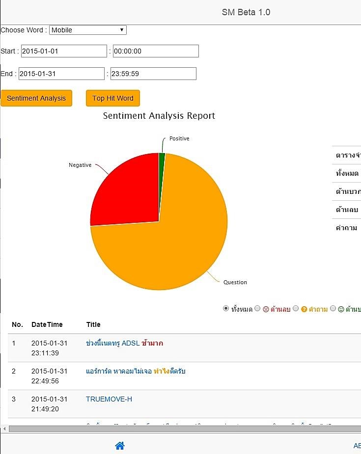
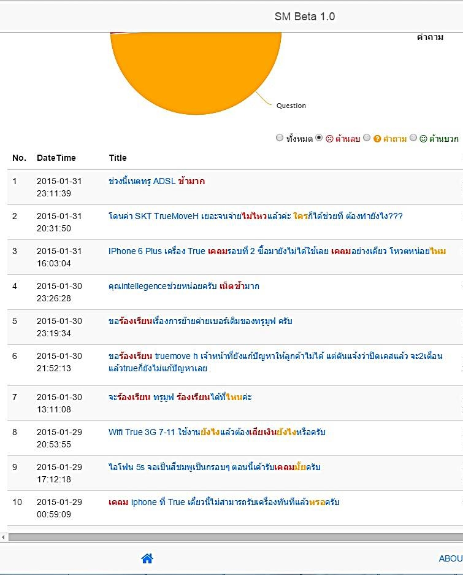
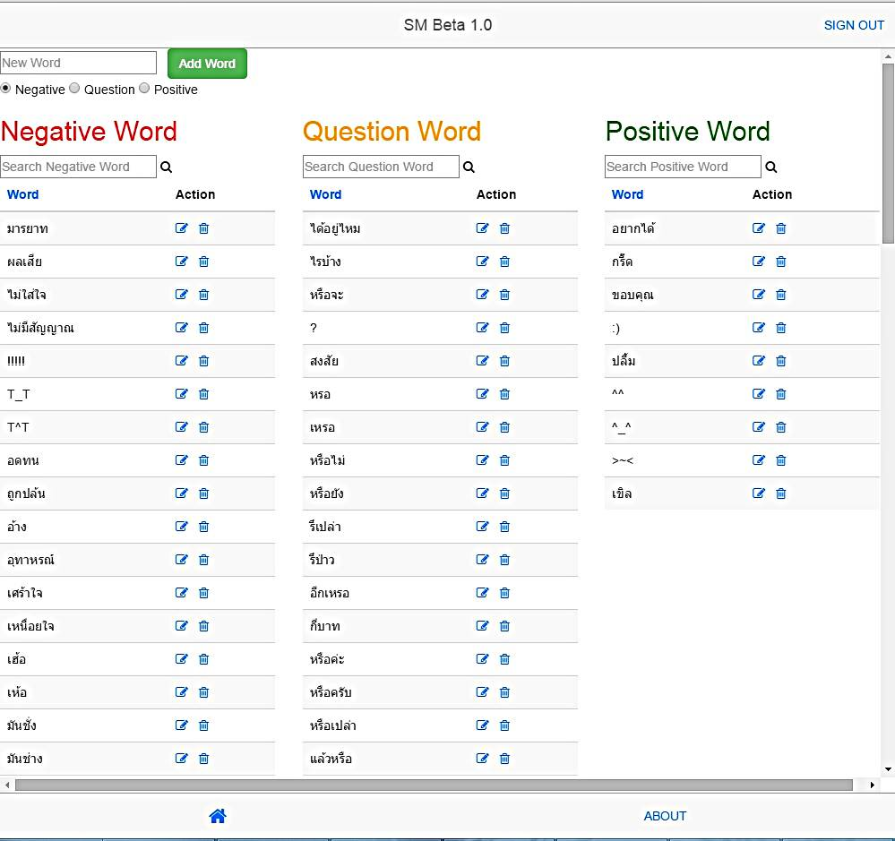

<style>
    .ban_style_php{
        color: white;
        background-color: purple;
    }
    .ban_style_php h2 {
        color: white;
    }
    .ban_white{
        color: black;
        background-color: white;
    }
    @media only screen and (min-width: 700px) {
        #phpman1 {width: 75%;}
        #phpman2 {width: 75%;}
        #phpman3 {width: 75%;}
        #phpman4 {width: 75%;}
        #phpman5 {width: 75%;}

        .ban_style {
            padding-top: 10px;
            padding-bottom: 10px;
        }
        .ban_white {
            padding-top: 10px;
            padding-bottom: 10px;
        }
    }
    @media only screen and (max-width: 699px) {
        #phpman1 {width: 100%;}
        #phpman2 {width: 100%;}
        #phpman3 {width: 100%;}
        #phpman4 {width: 100%;}
        #phpman5 {width: 100%;}
    }
</style>

<ion-view view-title="PHP">
    <ion-content overflow-scroll="true">
        <div class="rowly ban_style_php">
            <div class="coly-1"></div>
            <div class="coly-10">
                <h2><b><span class="now_rap">Pantip Monitoring</span>
                        <span class="now_rap">& Sentiment Analysis</span></b></h2>
                <br/>

                <div class="story_text">
                    &nbsp;&nbsp;&nbsp;&nbsp; เป็นโปรเจคตอนเป็นนักศึกษาฝึกงานปี 4 ที่บริษัท ทรู คอร์เปอเรชั่น ครับ 
                <br/><br/>
                    Sentiment Analysis นำข้อมูลมาออกรายงาน วิเคราะห์ด้านบวก ด้านลบ ให้กับนักการตลาดใช้ครับ<br/><br/>
                    <div align="center">
                        
                        <br/>
                        
                        <br/>
                        
                        <br/>
                    </div>
                    <br/><br/>
                    ไม่รู้ว่าทุกวันนี้เขาใช้โปรเจกเราอยู่หรือเปล่านะครับ แต่เราก็ได้ประสบการณ์ ที่ดีจากที่นี่ครับ
                    <br/><br/>
                    <b>ความรู้ที่ใช้ : </b>PHP , Functional Programming , Javascript , Angular , JQuery , Bootstrap , S-SENSE API , Highchart
                    <br/><br/>
                    <b>ฐานข้อมูล : </b>MySQL<br/><br/>
                </div>
            </div>
            <div class="coly-1"></div>
        </div>
    </ion-content>
</ion-view>
